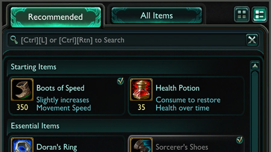

|  |
Itens |
|
Numa partida de League of Legends, seu campeão ganha Ouro destruindo unidades e estruturas inimigas. Aplicar o golpe final numa tropa ou campeão, assistência ao matar um campeão e adquirir certas runas ou itens são apenas algumas maneiras de gerar Ouro extra. Você pode usá-lo para comprar itens na loja junto à plataforma do invocador. Basta clicar na loja ou no botão próximo ao seu total de Ouro para abri-la. - Os itens concedem bônus assim que são comprados, não é preciso equipá-los. - Diferentes campeões e estilos de jogo são beneficiados por diferentes combinações de itens, por isso suas compras devem ser orientadas pela sua estratégia. - Os itens mais poderosos são criados por meio de combinações de itens menores. - Itens consumíveis, tais como poções, sentinelas e itens ativáveis, são usados ao se clicar no inventário ou por meio dos atalhos 1 - 6. |